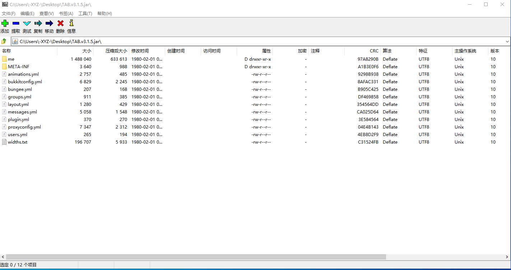
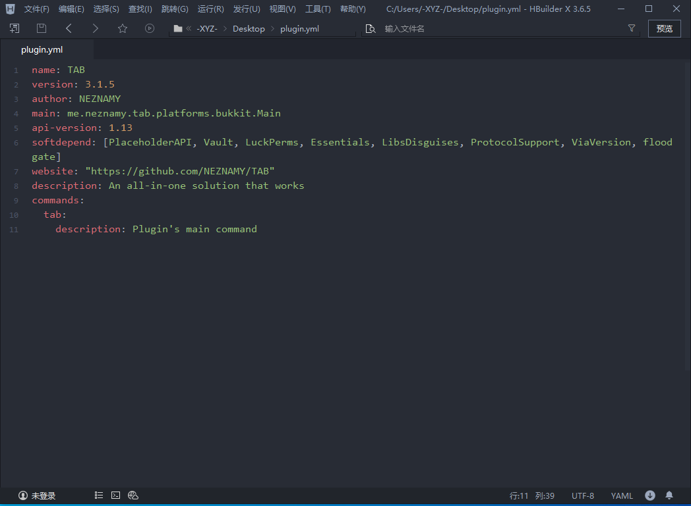

yml文件
你知道是写字的就好了
感兴趣可以看看这些
首先，辨认一个插件，一个bukkit（也可以说spigot/paper等）插件应该是一个jar后缀的文件
jar本质是一个压缩包，你可以叫它jar包
可以使用压缩软件打开，比如这里用压缩软件7z和TAB插件演示这里，这个叫me的文件夹接着点下去就是插件代码了（一些更多的文件夹和class后缀的文件）
（其他插件不一定是me文件夹）
默认配置
手快的同学可能发现了，这里面的这些文件不就是插件文件夹里的嘛！
是的，一般塞在这里的东西就是会输出到插件文件夹里的配置，即默认配置，如果你正用着插件，然后突然又想看看插件的默认配置，直接把这里的东西解压出来就好了，或者把插件配置删掉重启服务端，重新生成
请注意，有些插件是没有配置文件的
plugin.yml
现在有吊小的同学发现了，哎哎这里面有个plugin.yml没在配置文件里啊
我们把这个yml文件解压出来，用文本编辑器打开
name
就是插件名字，插件配置文件夹也会是这个name
当你执行命令/plugin的时候，会列出所有识别到的插件，成功加载的插件为绿色，未成功加载的插件为红色，识别到的插件在/pl显示的名字也是这的name，即 TAB
/plugin简写/pl
version: 3.1.5
版本
author: NEZNAMY
作者
main: me.neznamy.tab.platforms.bukkit.Main
插件主类，开发插件的用，圈钱腐竹不用管
api-version: 1.13
这个插件使用的API版本，圈钱腐竹不用管
softdepend: [PlaceholderAPI, Vault, LuckPerms, Essentials, LibsDisguises, ProtocolSupport, ViaVersion, floodgate]
这里的意思是你可以装这些插件使本插件功能增强，但不是必装
以后你还会看到depend就是说这个插件必须依赖此插件才能使用
但不是说没在这写就不需要了，有些人图懒plugin.yml写的老简单了 = =
website: "https://github.com/NEZNAMY/TAB"
description: An all-in-one solution that works
不讲
注册命令
commands:
tab:
description: Plugin's main command
description你不知道什么意思那你英语不及格
EssentialsX的plugin.yml中的afk是这样的
commands:
afk:
description: Marks you as away-from-keyboard.
usage: /
<
command
>
[player/message...]
aliases: [eafk,away,eaway]
插件注册了哪些命令
usage 该命令的用法
aliases 命令的别名 比如原本命令是 /afk 但是你用别名/away也是指/afk命令，效果相同
注意，这里没写命令不代表该插件没有命令！
为什么呢？
图懒吧